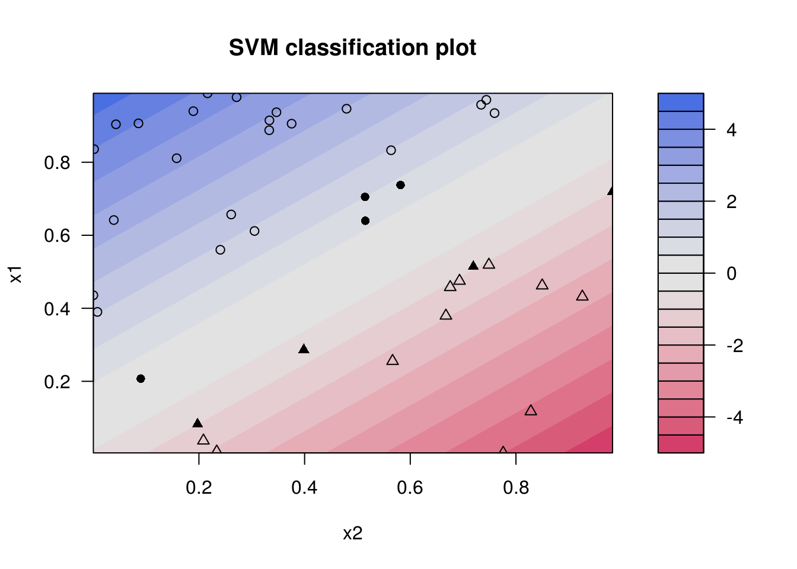
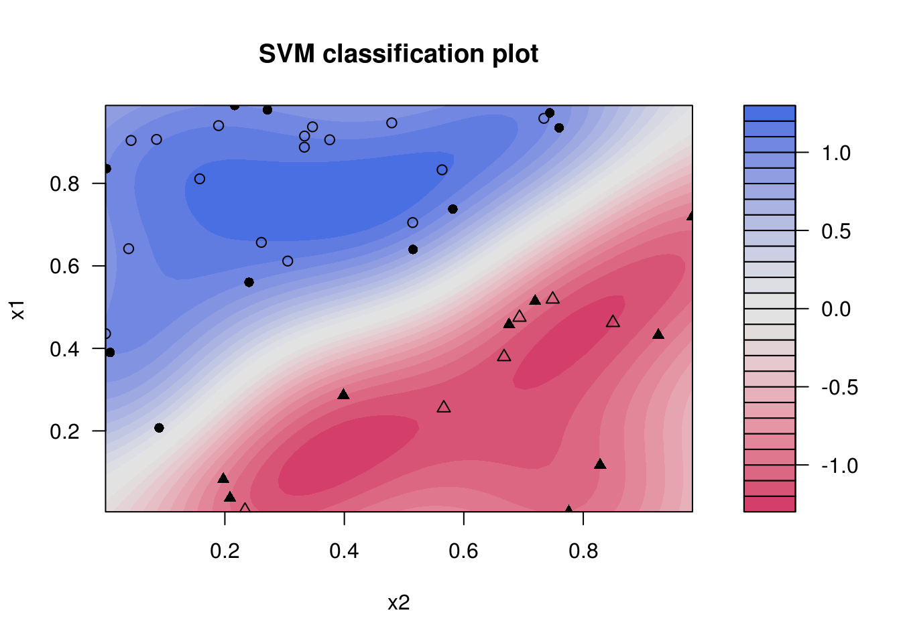
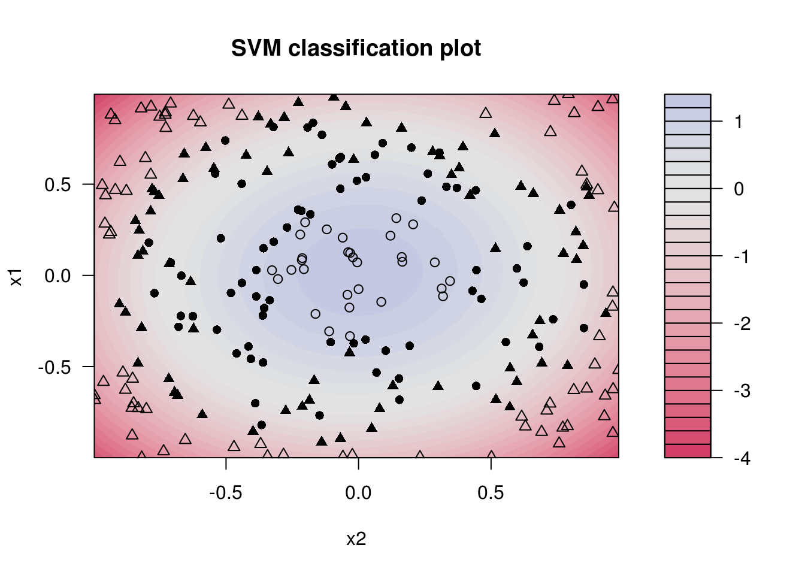
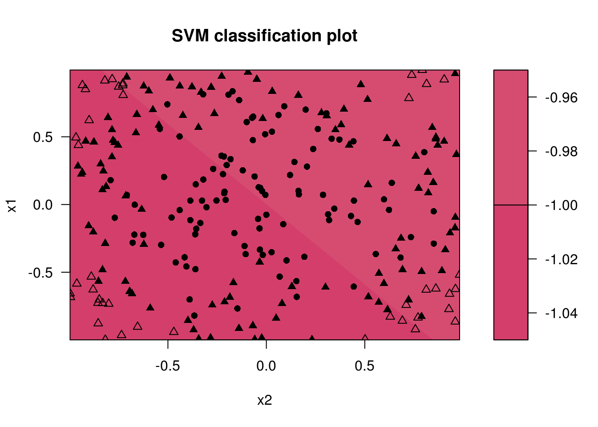

Chapter 32 Support Vector Machines
32.1 R Packages
library(randomForest)
library(caret)
library(kernlab)For working with SVMs in R we will use the kernlab package instead of e1071. For examples of e1071 see the relevant chapter in ISL. We do not discuss the details of the method, however show how the method can be tuned.
32.2 Classification
SVMs are mostly used for classification. Note that they can be modified for regression but we will not do that here. Since we are performing classification, we will use accuracy as our metric.
accuracy = function(actual, predicted) {
mean(actual == predicted)
}32.3 Linear, Separable Example
32.3.1 Data Simulation
sim_sep = function(n = 1000) {
x1 = runif(n)
x2 = runif(n)
keep = x1 + 0.1 < x2 | x1 - 0.1 > x2
x1 = x1[keep]
x2 = x2[keep]
y = 1 * (x1 - x2 > 0)
y = ifelse(y == 1, "Orange", "Blue")
data.frame(y = as.factor(y), x1 = x1, x2 = x2)
}set.seed(42)
train_data = sim_sep(n = 50)
plot(x2 ~ x1, data = train_data, col = as.character(y), pch = 19)
test_data = sim_sep(n = 500)
str(train_data)## 'data.frame': 41 obs. of 3 variables:
## $ y : Factor w/ 2 levels "Blue","Orange": 2 2 1 2 1 2 2 1 1 2 ...
## $ x1: num 0.915 0.937 0.286 0.642 0.519 ...
## $ x2: num 0.3334 0.3467 0.3985 0.0389 0.7488 ...32.3.2 Linear Kernel, Parameter C
lin_svm_fit = ksvm(y ~ ., data = train_data, kernel = 'vanilladot', C = 0.1)## Setting default kernel parametersplot(lin_svm_fit, data = train_data)
# train accuracy
accuracy(actual = train_data$y,
predicted = predict(lin_svm_fit, train_data))## [1] 1# test accuracy
accuracy(actual = test_data$y,
predicted = predict(lin_svm_fit, test_data))## [1] 0.9872449lin_svm_fit = ksvm(y ~ ., data = train_data, kernel = 'vanilladot', C = 1)## Setting default kernel parametersplot(lin_svm_fit, data = train_data)
# train accuracy
accuracy(actual = train_data$y,
predicted = predict(lin_svm_fit, train_data))## [1] 1# test accuracy
accuracy(actual = test_data$y,
predicted = predict(lin_svm_fit, test_data))## [1] 1lin_svm_fit = ksvm(y ~ ., data = train_data, kernel = 'vanilladot', C = 10)## Setting default kernel parametersplot(lin_svm_fit, data = train_data)
# train accuracy
accuracy(actual = train_data$y,
predicted = predict(lin_svm_fit, train_data))## [1] 1# test accuracy
accuracy(actual = test_data$y,
predicted = predict(lin_svm_fit, test_data))## [1] 132.3.3 Radial Kernel
set.seed(42)
rad_svm_fit = ksvm(y ~ ., data = train_data, kernel = 'rbfdot', C = 1)
plot(rad_svm_fit, data = train_data)
# train accuracy
accuracy(actual = train_data$y,
predicted = predict(rad_svm_fit, train_data))## [1] 1# test accuracy
accuracy(actual = test_data$y,
predicted = predict(rad_svm_fit, test_data))## [1] 132.3.4 Tuning with caret
svm_grid = expand.grid(C = c(2 ^ (-5:5)))
svm_control = trainControl(method = "cv", number = 5,
returnResamp = "all", verbose = FALSE)
set.seed(42)
lin_svm_fit = train(y ~ ., data = train_data, method = "svmLinear",
trControl = svm_control, tuneGrid = svm_grid)
lin_svm_fit## Support Vector Machines with Linear Kernel
##
## 41 samples
## 2 predictor
## 2 classes: 'Blue', 'Orange'
##
## No pre-processing
## Resampling: Cross-Validated (5 fold)
## Summary of sample sizes: 33, 33, 33, 33, 32
## Resampling results across tuning parameters:
##
## C Accuracy Kappa
## 0.03125 0.850 0.6197802
## 0.06250 0.950 0.8928571
## 0.12500 0.975 0.9500000
## 0.25000 0.975 0.9500000
## 0.50000 0.975 0.9500000
## 1.00000 1.000 1.0000000
## 2.00000 0.975 0.9500000
## 4.00000 1.000 1.0000000
## 8.00000 1.000 1.0000000
## 16.00000 1.000 1.0000000
## 32.00000 1.000 1.0000000
##
## Accuracy was used to select the optimal model using the largest value.
## The final value used for the model was C = 1.lin_svm_fit$bestTune## C
## 6 1# train accuracy
accuracy(actual = train_data$y,
predicted = predict(lin_svm_fit, train_data))## [1] 1# test accuracy
accuracy(actual = test_data$y,
predicted = predict(lin_svm_fit, test_data))## [1] 132.3.5 Compare: Random Forest
set.seed(42)
rf_grid = expand.grid(mtry = 1:2)
rf_fit = train(y ~ ., data = train_data, method = "rf",
trControl = svm_control, tuneGrid = rf_grid)
rf_fit$bestTune## mtry
## 1 1# train accuracy
accuracy(actual = train_data$y,
predicted = predict(rf_fit, train_data))## [1] 1# test accuracy
accuracy(actual = test_data$y,
predicted = predict(rf_fit, test_data))## [1] 0.959183732.4 Non-Linear, Non-Separable Example
32.4.1 Data Simulation
sim_rad = function(n = 1000) {
x1 = runif(n, -1, 1)
x2 = runif(n, -1, 1)
y = 1 * (x1 ^ 2 + x2 ^ 2 + rnorm(n, 0, 0.25) < 0.5)
y = ifelse(y == 1, "Orange", "Blue")
data.frame(y = as.factor(y), x1 = x1, x2 = x2)
}set.seed(42)
train_data = sim_rad(n = 250)
plot(x2 ~ x1, data = train_data, col = as.character(y), pch = 19)
test_data = sim_rad(n = 2000)32.4.2 Radial Kernel, Parameter C
rad_svm_fit = ksvm(y ~., data = train_data, kernel = 'rbfdot',
C = 0.1, kpar = list(sigma = 1))
plot(rad_svm_fit, data = train_data)
# train accuracy
accuracy(actual = train_data$y,
predicted = predict(rad_svm_fit, train_data))## [1] 0.852# test accuracy
accuracy(actual = test_data$y,
predicted = predict(rad_svm_fit, test_data))## [1] 0.812rad_svm_fit = ksvm(y ~., data = train_data, kernel = 'rbfdot',
C = 1, kpar = list(sigma = 1))
plot(rad_svm_fit, data = train_data)
# train accuracy
accuracy(actual = train_data$y,
predicted = predict(rad_svm_fit, train_data))## [1] 0.876# test accuracy
accuracy(actual = test_data$y,
predicted = predict(rad_svm_fit, test_data))## [1] 0.833rad_svm_fit = ksvm(y ~., data = train_data, kernel = 'rbfdot',
C = 10, kpar = list(sigma = 1))
plot(rad_svm_fit, data = train_data)
# train accuracy
accuracy(actual = train_data$y,
predicted = predict(rad_svm_fit, train_data))## [1] 0.884# test accuracy
accuracy(actual = test_data$y,
predicted = predict(rad_svm_fit, test_data))## [1] 0.828532.4.3 Radial Kernel, Parameter sigma
rad_svm_fit = ksvm(y ~., data = train_data, kernel = 'rbfdot',
C = 1, kpar = list(sigma = 0.5))
plot(rad_svm_fit, data = train_data)
# train accuracy
accuracy(actual = train_data$y,
predicted = predict(rad_svm_fit, train_data))## [1] 0.864# test accuracy
accuracy(actual = test_data$y,
predicted = predict(rad_svm_fit, test_data))## [1] 0.8365rad_svm_fit = ksvm(y ~., data = train_data, kernel = 'rbfdot',
C = 1, kpar = list(sigma = 1))
plot(rad_svm_fit, data = train_data)
# train accuracy
accuracy(actual = train_data$y,
predicted = predict(rad_svm_fit, train_data))## [1] 0.876# test accuracy
accuracy(actual = test_data$y,
predicted = predict(rad_svm_fit, test_data))## [1] 0.833rad_svm_fit = ksvm(y ~., data = train_data, kernel = 'rbfdot',
C = 1, kpar = list(sigma = 2))
plot(rad_svm_fit, data = train_data)
# train accuracy
accuracy(actual = train_data$y,
predicted = predict(rad_svm_fit, train_data))## [1] 0.884# test accuracy
accuracy(actual = test_data$y,
predicted = predict(rad_svm_fit, test_data))## [1] 0.82832.4.4 Radial Kernel, Tuning
svm_grid = expand.grid( C = c(2 ^ (-5:5)),
sigma = c(2 ^ (-3:3)))
set.seed(42)
rad_svm_fit = train(y ~ ., data = train_data, method = "svmRadial",
trControl = svm_control, tuneGrid = svm_grid)
#rad_svm_fit
rad_svm_fit$bestTune## sigma C
## 65 0.25 16rad_svm_fit = ksvm(y ~., data = train_data, kernel = 'rbfdot',
C = 16, kpar = list(sigma = 0.25))
plot(rad_svm_fit, data = train_data)
# train accuracy
accuracy(actual = train_data$y,
predicted = predict(rad_svm_fit, train_data))## [1] 0.876# test accuracy
accuracy(actual = test_data$y,
predicted = predict(rad_svm_fit, test_data))## [1] 0.83832.4.5 Polynomial Kernel, Tuning
set.seed(42)
poly_svm_fit = train(y ~ ., data = train_data, method = "svmPoly",
trControl = svm_control)
#poly_svm_fit
poly_svm_fit$bestTune## degree scale C
## 27 3 0.1 1poly_svm_fit = ksvm(y ~., data = train_data, kernel = 'polydot',
C = 1, kpar = list(scale = 0.1, degree = 3))
plot(poly_svm_fit, data = train_data)
# train accuracy
accuracy(actual = train_data$y,
predicted = predict(poly_svm_fit, train_data))## [1] 0.864# test accuracy
accuracy(actual = test_data$y,
predicted = predict(poly_svm_fit, test_data))## [1] 0.842532.4.6 Linear Kernel, Tuning
svm_grid = expand.grid(C = c(2 ^ (-5:5)))
set.seed(42)
lin_svm_fit = train(y ~ ., data = train_data, method = "svmLinear",
trControl = svm_control, tuneGrid = svm_grid)
lin_svm_fit## Support Vector Machines with Linear Kernel
##
## 250 samples
## 2 predictor
## 2 classes: 'Blue', 'Orange'
##
## No pre-processing
## Resampling: Cross-Validated (5 fold)
## Summary of sample sizes: 200, 200, 201, 199, 200
## Resampling results across tuning parameters:
##
## C Accuracy Kappa
## 0.03125 0.5920144 0
## 0.06250 0.5920144 0
## 0.12500 0.5920144 0
## 0.25000 0.5920144 0
## 0.50000 0.5920144 0
## 1.00000 0.5920144 0
## 2.00000 0.5920144 0
## 4.00000 0.5920144 0
## 8.00000 0.5920144 0
## 16.00000 0.5920144 0
## 32.00000 0.5920144 0
##
## Accuracy was used to select the optimal model using the largest value.
## The final value used for the model was C = 0.03125.lin_svm_fit$bestTune## C
## 1 0.03125lin_svm_fit = ksvm(y ~., data = train_data, kernel = 'vanilladot',
C = lin_svm_fit$bestTune)## Setting default kernel parametersplot(lin_svm_fit, data = train_data)
# train accuracy
accuracy(actual = train_data$y,
predicted = predict(lin_svm_fit, train_data))## [1] 0.592# test accuracy
accuracy(actual = test_data$y,
predicted = predict(lin_svm_fit, test_data))## [1] 0.600532.4.7 Compare: Random Forest
set.seed(42)
rf_grid = expand.grid(mtry = 1:2)
rf_fit = train(y ~ ., data = train_data, method = "rf",
trControl = svm_control, tuneGrid = rf_grid)
rf_fit$bestTune## mtry
## 2 2# train accuracy
accuracy(actual = train_data$y,
predicted = predict(rf_fit, train_data))## [1] 1# test accuracy
accuracy(actual = test_data$y,
predicted = predict(rf_fit, test_data))## [1] 0.80932.5 External Links
- SVM with Polynomial Kernel Visualization - The kernel idea in one simple video.
32.6 RMarkdown
The RMarkdown file for this chapter can be found here. The file was created using R version 3.4.1 and the following packages:
- Base Packages, Attached
## [1] "methods" "stats" "graphics" "grDevices" "utils" "datasets"
## [7] "base"- Additional Packages, Attached
## [1] "kernlab" "caret" "ggplot2" "lattice"
## [5] "randomForest"- Additional Packages, Not Attached
## [1] "Rcpp" "nloptr" "compiler" "plyr"
## [5] "class" "iterators" "tools" "digest"
## [9] "lme4" "evaluate" "tibble" "gtable"
## [13] "nlme" "mgcv" "rlang" "Matrix"
## [17] "foreach" "parallel" "yaml" "SparseM"
## [21] "e1071" "stringr" "knitr" "MatrixModels"
## [25] "stats4" "rprojroot" "grid" "nnet"
## [29] "rmarkdown" "bookdown" "minqa" "reshape2"
## [33] "car" "magrittr" "backports" "scales"
## [37] "codetools" "ModelMetrics" "htmltools" "MASS"
## [41] "splines" "pbkrtest" "colorspace" "quantreg"
## [45] "stringi" "lazyeval" "munsell"